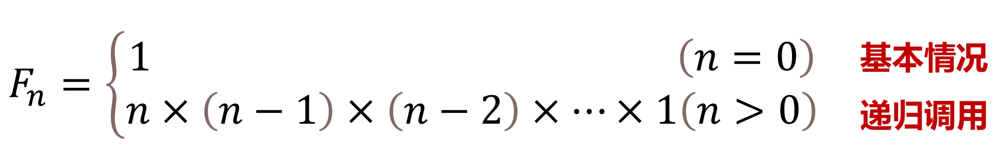

递归算法
概念
递归是通过直接或间接让自身来解决问题的一种方法。
递归通常用于将一个复杂的问题分解成更小的相同类型的问题，直到问题变得简单到可以直接解决为止。
递归在现实中有许多实际应用，尤其在解决具有重复性、分治性或自相似性的复杂问题时非常有效。如形成分形图（Mandelbrot 集合、谢尔宾斯基地毯和分形树）、用于解决数学问题（阶乘、斐波那契数列）、模拟自然界中的现象（雪花形状、植物生长等）。
递归算法的基本结构
1、基本情况：递归必须有一个基本情况，也就是不再进行递归调用的条件。当满足这个条件时，函数直接返回结果，不再调用自身。
2、递归调用：在非基本情况下，会调用自身函数，以处理问题的一个或多个子问题。每次递归调用都应该使问题的规模减小，最终趋向基本情况。
例如：自然数n阶乘的公式

递归算法的优缺点
- 优点
- ·递归通常使代码更简洁、清晰，尤其在处理分解问题时。
- ·递归对于处理树形或分支结构问题（如遍历树或图）非常有效。
- 缺点
- ·递归可能导致大量函数调用，消耗较多的电脑内存和时间。
- ·如果没有恰当的基本情况，递归会进入无限循环，导致程序崩溃（栈溢出）。
递归算法可视化呈现
分形树（Fractal Tree） 是一种基于递归生成的数学图形，表现出一种自相似的分形结构。对于分形树来说，从主干出发，每一层的树枝都通过递归地分裂成更小的树枝，直到达到预设的最小分支长度或深度。简单来说，每一根树枝可以被看作是一棵小的“分形树”，这棵小树又有自己的更小的树枝。
- 分形树生成的基本步骤
- 步骤1:从树的根部开始绘制一根树枝。
- 步骤2:根据初始分支长度和角度，从树枝的末端，绘制两个新的树枝，每个树枝的长度和角度是递减的。
- 步骤3:重复步骤2，直到达到设定的递归深度。